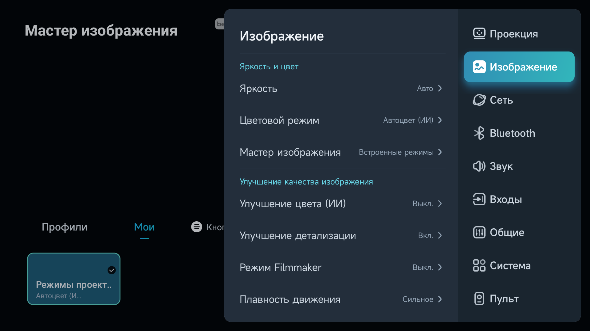
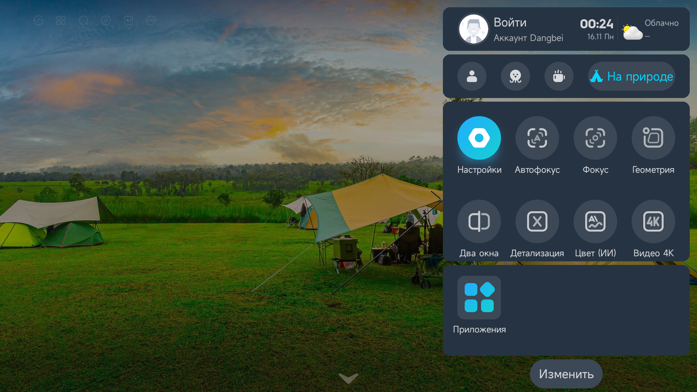
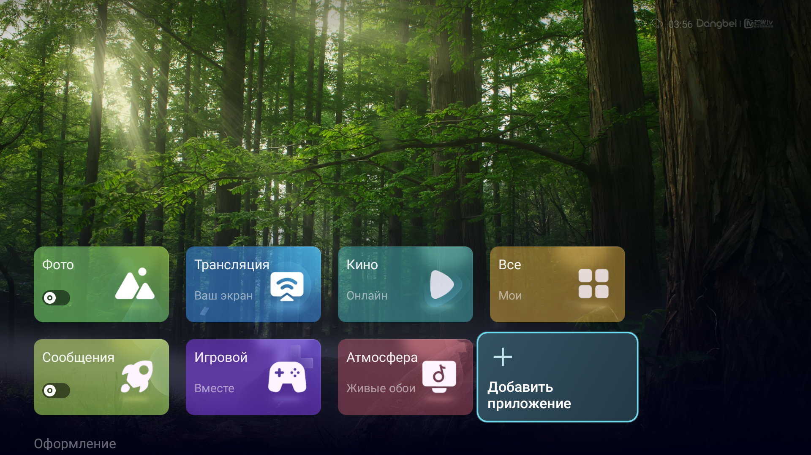
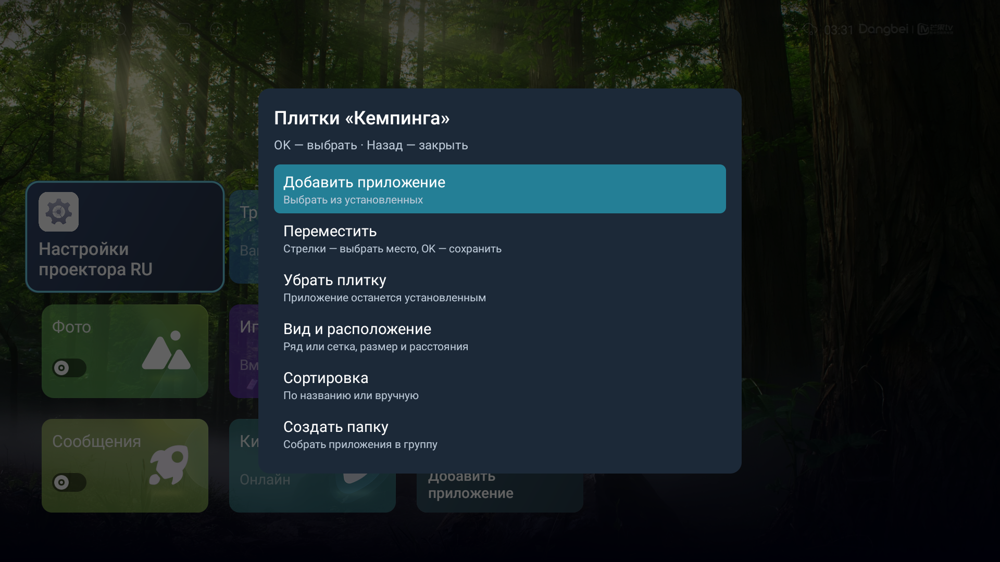
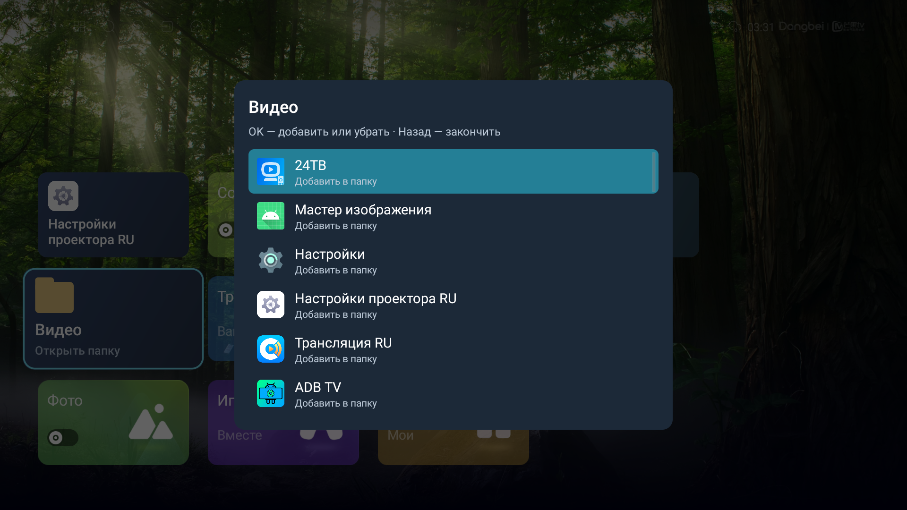
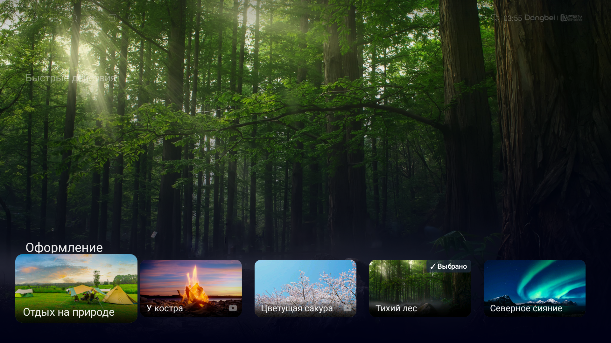

Русификация Dangbei X5 Ultra 1.2.0, Google Play и настройка рабочего стола
Собрал для своего X5 Ultra русский интерфейс и установщик. Выкладываю, если кто-то тоже хочет поставить на такой же проектор.
Проверял на DBX5 Ultra, модель X5U6128, Android 11, сборка 3764. На втором чистом проекторе пока не пробовал. Установщик проверяет модель, сборку и версии штатных приложений. Если они отличаются, установка не начнётся.
Что сделал
Перевёл лаунчер, настройки, боковую панель пульта, Мастер изображения и Трансляцию. Поправил подсказки и непонятные названия в настройках изображения. Заодно поправил цвета меню и выделение кнопок. Белого текста на белом фоне больше нет, шрифт уменьшать не пришлось.
В лаунчере переведены четыре режима: обычный, детский, с крупными значками и Кемпинг. Китайские афиши, онлайн-каталог и реклама остались как есть.
Исправил сохранение источника при включении. В окне последних приложений по двойному нажатию Домой добавил русские подписи. Вместо китайской клавиатуры поставил LeanKeyboard с русским и английским языками.
Настройки и боковая панель
Настройки изображения.

Панель по боковой кнопке пульта.

Что добавил в Кемпинг
Теперь на рабочий стол можно добавить свои приложения, убрать ненужные плитки и собрать приложения в папки. Можно оставить горизонтальный ряд или сделать сетку в два либо три ряда. Размер плиток, расстояния и отступы тоже меняются.
Для добавления приложения есть отдельная плитка. Чтобы открыть остальные настройки, выделите любую плитку и нажмите кнопку Меню или удерживайте OK.
В этом меню можно убрать плитку, переместить её стрелками пульта, выбрать сортировку или создать папку. Удаление плитки не удаляет приложение. Если убрать папку, её приложения вернутся на рабочий стол. Скрытые штатные плитки тоже можно вернуть.
Нижний раздел Оформление проверил с разными вариантами сетки. Фоны переключаются, к разделу можно перейти кнопкой вниз и вернуться кнопкой вверх. Настройки рабочего стола сохраняются после перезапуска лаунчера.
Рабочий стол, плитки и папки
Плитки в два ряда и кнопка добавления своего приложения.

Меню настройки плиток.

Выбор приложений для папки.

Выбор фона под плитками.

Скачать
Архивы для Windows, Mac и Linux
Инструкция и исходники
В архиве уже есть Python, ADB и нужные APK. Отдельно ничего устанавливать и настраивать не нужно.
Как поставить
1. Скачайте архив для своего компьютера и распакуйте целиком. Нужен архив с названием Windows, macOS или Linux. Source code для установки не нужен.
2. Подключите компьютер и проектор к одной сети. На проекторе включите отладку ADB/USB и посмотрите его IP-адрес.
3. На Windows откройте start.bat, на Mac откройте start.command, на Linux запустите start.sh.
4. Выберите, что поставить: русификацию с клавиатурой, только Google с Play Маркетом или всё вместе. Введите адрес проектора. Если появится запрос на отладку, подтвердите его на проекторе.
5. Дождитесь окончания установки и перезагрузите проектор.
Перед изменениями установщик делает бэкап на компьютере и сверяет сохранённые файлы с проектором. Если проверка не прошла, дальше он не пойдёт. Папку backups сохраните. Для возврата есть пункт Восстановить из бэкапа.
В бэкапе затрагиваемые APK и настройки. Это не полный образ памяти, аккаунты и закрытые данные приложений в него не входят. Чужой бэкап для восстановления не подойдёт.
Root и перепрошивка не нужны. Штатные приложения не удаляются. Старый лаунчер и штатная Трансляция отключаются, чтобы не мешать русским копиям. Совместимость с другими патчами из темы не проверял.
Нужен Windows 10/11 на 64 бита, macOS 15 или новее либо Linux x64 на базе Ubuntu 22.04 или новее. Для Mac с Intel и Apple Silicon разные архивы. Установщики не подписаны сертификатами Apple/Microsoft, поэтому система может спросить разрешение на первый запуск.
Что проверил и что осталось
На своём проекторе проверил меню, боковую кнопку, настройки изображения, профили, клавиатуру, вход в Google Play и установку приложений. В Трансляции проверены изображение и звук с телефона. При первом запуске нужно принять условия Dangbei. Имя приёмника смотрите на главном экране приложения.
Голосовой ввод работает так: сначала выбираете его в поле ввода, потом удерживаете кнопку микрофона на пульте и говорите. Google Ассистента пробовал, но рабочего помощника на этой прошивке не получилось. В комплект его не добавлял.
Сервисы Google не добавляют сертификацию и DRM. Официальный YouTube у меня зависал из-за PlayReady. Для просмотра использую SmartTube, в архив он не входит.
В Трансляции ещё остались китайские надписи внутри отдельных картинок и тексты соглашений. Miracast, USB и Huawei Cast+ отдельно не проверял. Сторонние приложения этой установкой не переводятся.
Если попробуете, напишите модель, сборку прошивки и что получилось. Личный бэкап в тему выкладывать не надо.